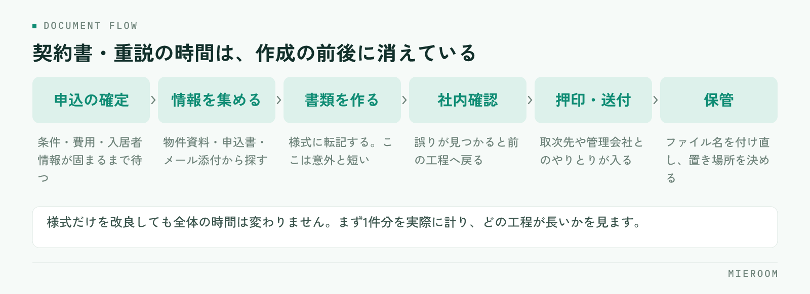

契約書と重要事項説明書（重説）の作成に時間がかかるのは、文章を書くのが遅いからではありません。同じ情報を何度も別の様式に書き写し、そのたびに元の資料を探して確認しているからです。この記事では、時間が消えている場所を分解し、転記を減らす手順を順に整理します。
この記事の結論
書類作成の時間は、様式を速く埋める工夫ではなく一次情報を1か所に集め、転記を1回に減らすことで縮みます。物件・申込者・条件の情報が案件ごとに1か所にあれば、書類はそこから展開するだけになります。
契約書・重説の作成が遅くなる本当の理由
契約書類の作成が長引く店舗ほど、担当者は速く手を動かしています。それでも終わらないのは、作業の中身が「書く」ではなく「探す」と「確かめる」で埋まっているからです。
物件の面積や構造は資料のどこか、賃料と初期費用は申込書、入居者の情報はメールの添付、火災保険の内容は取次先の書類。一次情報が5か所に散らばっていれば、書類1通につき5回探すことになります。
さらに、探した情報を書き写した時点で、その値は二重に存在します。あとから条件が変わったとき、どちらを直したか分からなくなる。これが差し戻しと再確認を生み、作成時間をもう一度膨らませます。
時間が消えている場所を分解する
まず、自店の作業を工程に分けて、どこに時間がかかっているかを見ます。感覚ではなく、実際に1件分を計ってみるのが早い方法です。

多くの店舗で長いのは、書類を作っている時間そのものではなく、その前後です。申込内容の確定待ち、社内確認の往復、押印と送付、保管とファイル名の付け直し。ここを見ずに様式だけ改良しても、全体の時間は変わりません。
転記を1回に減らす考え方
時間を縮める原則はひとつです。同じ値を2回書かない。そのために、案件ごとの一次情報を先に確定させてから書類に展開します。
- 一次情報の置き場所を1つに決める：物件情報、申込者情報、契約条件、費用の内訳をひとまとめにします
- 書類は展開先と考える：契約書も重説も、一次情報の見せ方が違うだけと捉えます
- 確定していない値は空欄で残す：仮の数字を入れると、そのまま最終版に残ります
- 変更は一次情報だけを直す：書類側を直すと、次の書類にまた古い値が入ります
この形にすると、条件変更が入っても直す場所が1か所で済みます。申込から契約までを1行で追う考え方は申込管理表の作り方と同じで、契約書類はその行の続きにあると考えると設計しやすくなります。
書類を作る前にそろえておく項目
作成に着手する前に、次の項目が確定しているかを確かめます。ここが埋まっていない状態で作り始めると、必ず途中で止まります。
- 物件：所在地、建物名、部屋番号、面積、構造、築年、設備
- 契約条件：契約期間、賃料、共益費、敷金・礼金、更新条件、特約
- 費用：初期費用の内訳、支払期日、振込先の指定
- 入居者：氏名、生年月日、勤務先、連絡先、同居人、緊急連絡先
- 保証・保険：保証会社と審査結果、火災保険の内容と加入方法
- 関係先：管理会社、オーナー、取次する保険会社、鍵の受け渡し方法
特約は案件ごとに文言を考えると時間がかかり、表現も揺れます。よく使う特約は文言を決めて一覧にしておき、案件では選ぶだけにします。新しい文言を追加するときだけ、内容を確認します。
誤りが出やすい項目とチェックの型
急いで作った書類で間違いが出る場所は、店舗が違ってもほぼ同じです。チェックは思いつきではなく、決まった順番で見ます。
| 確認する項目 | よくある誤り | 見るときの基準 |
|---|---|---|
| 面積・構造・築年 | 別部屋の資料から転記 | 募集図面ではなく謄本・原本で確認 |
| 契約期間 | 開始日と入居日の混同 | 鍵の引渡日と契約開始日を分けて書く |
| 賃料・共益費 | 交渉後の金額が反映されていない | 申込の最終合意メモと突き合わせる |
| 初期費用 | 日割りの計算月がずれる | 起算日と日数を式のまま残す |
| 氏名・生年月日 | 旧字体、西暦と和暦の混在 | 本人確認書類の表記に合わせる |
| 特約 | 前の案件の文言が残る | 案件ごとに読み上げて確認する |
前の案件のファイルを複製して作る方法は速い代わりに、直し忘れが必ず起きます。特に特約と初期費用の欄は、消したつもりで残ります。複製ではなく、空の様式に一次情報から入れる形にしてください。
Excelとワープロで運用するときの工夫
すぐに仕組みを入れ替えられない場合でも、運用の工夫で時間は縮みます。
まず、様式のファイルを1か所に置き、複製は禁止にします。担当者の手元にコピーが増えると、古い様式で作られた書類が混ざります。次に、入力する欄と印刷される欄を分け、入力欄に入れた値が各所に反映される形にします。同じ値を複数箇所に手で入れる様式は、そこが誤りの発生源です。
保管も決めておきます。ファイル名の付け方を1つに固定するだけで、探す時間は目に見えて減ります。契約日・物件名・部屋番号・入居者名の順など、店舗で1つ決めれば十分です。Excelでの管理が限界に近づくときの見分け方はExcel管理から仕組みへ移すときにまとめています。
よくある質問
書類作成を担当者ごとにやるか、1人にまとめるか、どちらがよいですか？
重説の読み合わせの時間も短くできますか？
社内で使っている独自の契約書式でも仕組みに載せられますか？
まとめ：様式を速く埋めるより、転記を減らす
契約書と重説の作成時間は、入力の速さではほとんど変わりません。縮むのは、一次情報を1か所に集め、書類はそこから展開する形にしたときです。物件・条件・費用・入居者の情報が案件ごとにまとまっていれば、書類作成は探す作業ではなくなります。
今日からできるのは3つです。複製して作るのをやめること、よく使う特約の文言を決めておくこと、確認の順番を紙1枚にして全員で同じ順に見ること。これだけでも、差し戻しは目に見えて減ります。
ミエルームは、申込から契約までの情報を案件ごとに1か所で持ち、社内の契約フォーマットの自動取込に対応しています。Excelデータの取り込みと初期設定の代行、デモアカウントの発行、最短即日でのスタートが可能です。今の書式のまま運用を整えたい段階からご相談ください。